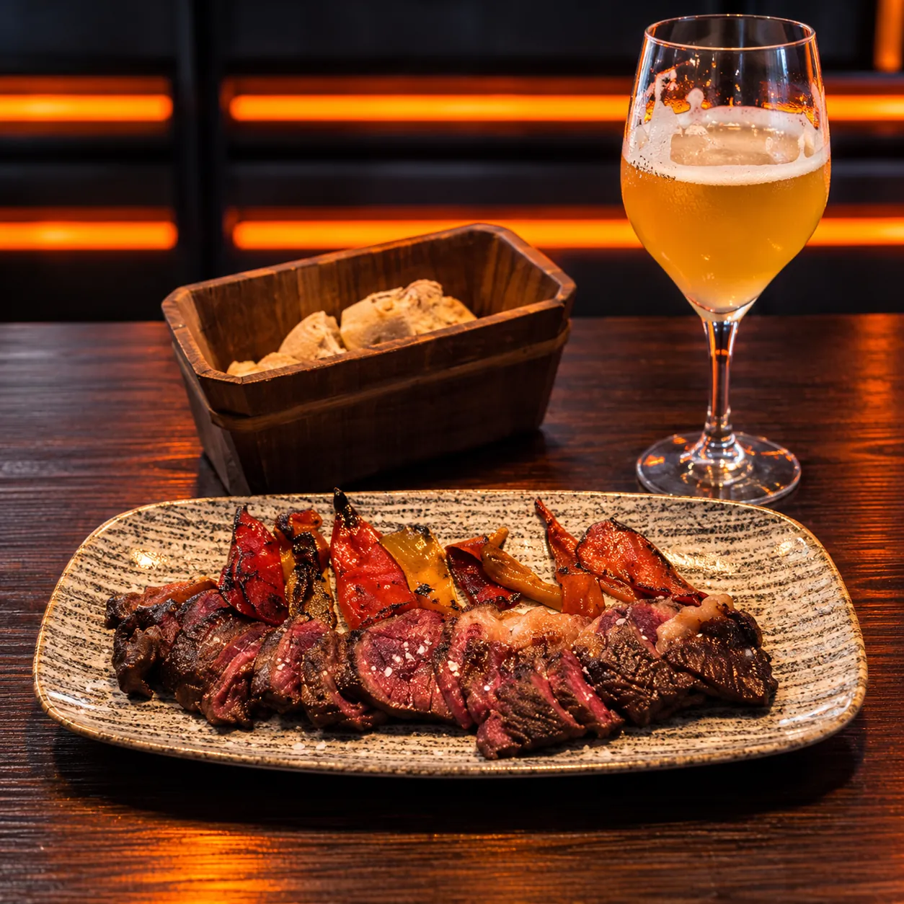
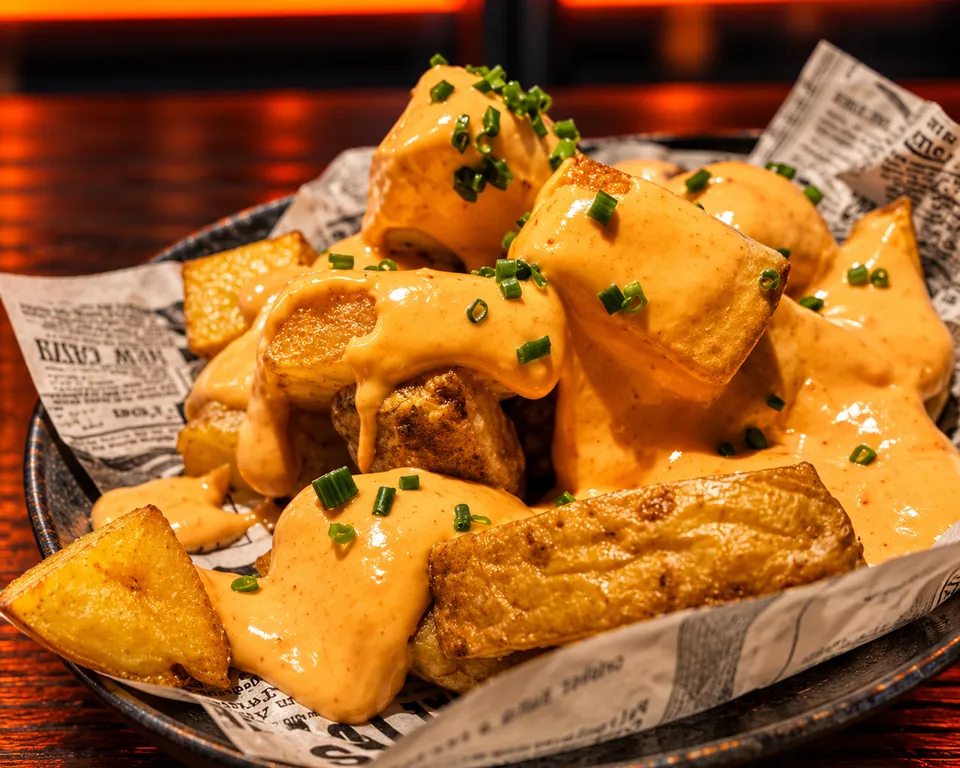

Nuestra esencia
El sabor no se negocia.
Descúbrenos · Logroño
No es solo comer
Es disfrutar cada bocado.
Hay comidas que se disfrutan. Y otras que se recuerdan.
En LASOGA, queremos que cada visita tenga algo especial.
Texto provisional · pendiente de aprobaciónUna experiencia diferente

02Cada detalle cuenta.

03Hecho para disfrutar.
El siguiente bocado es tuyo.
Descubre nuestra cartaPágina de demostración. Textos e imágenes pendientes de aprobación por el establecimiento.